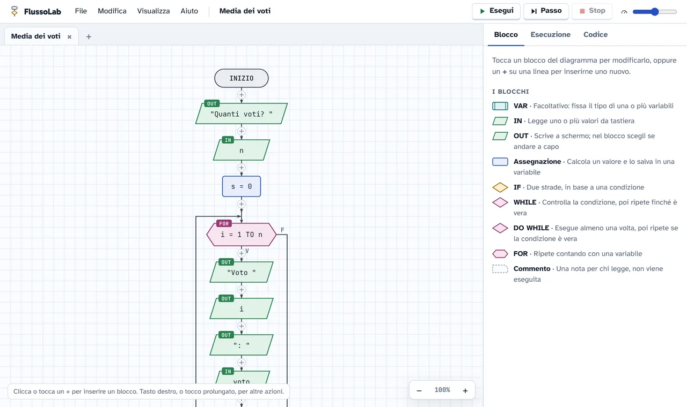
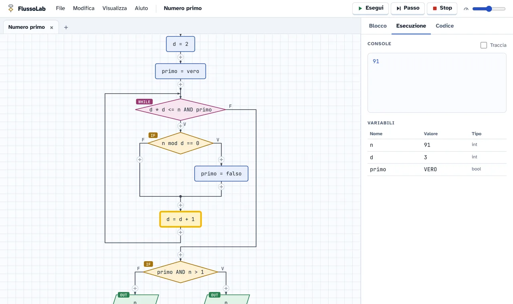
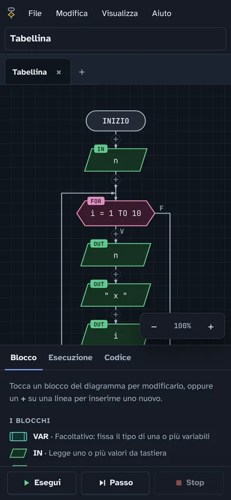

Diagrammi di flusso che si eseguono, direttamente nel browser
FlussoLab è un editor gratuito per imparare a programmare con i diagrammi di flusso. Si costruisce a blocchi, si esegue passo passo e si consegna in un file. Niente da installare: funziona su PC, Mac, Chromebook e tablet.
Apri FlussoLabCodice su GitHub
Gratis, senza account, funziona anche offline.

Cosa sa fare
Per chi impara
- I blocchi di sempre: IN, OUT, assegnazione, IF, WHILE, DO WHILE, FOR, VAR e commento.
- Esecuzione completa o passo passo, con il blocco attivo evidenziato e la tabella delle variabili.
- Errori segnalati prima di eseguire, con messaggi che spiegano cosa correggere.
- Pseudocodice e codice Python generati dal diagramma, collegati blocco per blocco.
- Tipi come in C: int, float, string e bool, con divisione intera e cast.
Per chi insegna
- Gli studenti consegnano un file .flusso, oppure un unico ZIP con tutti i diagrammi e le immagini.
- Un diagramma si condivide con un link: la classe lo apre già pronto, senza caricare nulla su un server.
- Nessun account e nessun dato raccolto: il lavoro resta sul dispositivo.
- Immagini PNG dei diagrammi, pronte per verifiche e presentazioni.
- Gratuito e con il codice aperto a tutti.
Ovunque
- Nel browser su Windows, Mac, Linux, Chromebook, iPad e Android.
- Si installa come app e funziona anche senza internet.
- In italiano e in inglese, con tema chiaro e scuro.


Un'alternativa online ad AlgoBuild e Flowgorithm
Se in classe usavi AlgoBuild o Flowgorithm, in FlussoLab ritrovi gli stessi blocchi e lo stesso modo di ragionare, senza installare nulla. È pensato anche per le classi con Chromebook e tablet, dove i programmi da installare non si possono usare.
| FlussoLab | Programmi da installare | |
|---|---|---|
| Si apre dal browser | Sì | No |
| Chromebook e tablet | Sì | No |
| Funziona senza internet | Sì | Sì |
| Consegna in un unico ZIP | Sì | No |
Domande frequenti
È davvero gratis?
Sì, sempre. FlussoLab è distribuito con licenza CC BY-NC-SA 4.0: chiunque può usarlo e studiarne il codice, ma nessuno può venderlo o guadagnarci.
Serve registrarsi?
No. I diagrammi restano salvati nel browser del dispositivo; per consegnarli o spostarli si salva un file .flusso.
Funziona su Chromebook e iPad?
Sì. Basta un browser aggiornato: Chrome, Edge, Safari o Firefox. Su telefono e tablet l'interfaccia si adatta allo schermo.
Funziona senza internet?
Sì, dopo la prima apertura. Puoi anche installarlo come app: dal menu del browser in Chrome ed Edge, oppure con «Aggiungi alla schermata Home» in Safari.
Come consegnano i lavori gli studenti?
Con File → Salva si crea un file .flusso. Con File → Esporta consegna (ZIP) si ottiene un unico file con tutti i diagrammi aperti, sia da riaprire sia come immagini, con il nome dello studente.
In quali linguaggi traduce il diagramma?
In pseudocodice, in italiano o in inglese, e in Python, che si attiva dalle opzioni.
Posso proporre modifiche o tradurlo?
Sì. Il progetto è su GitHub: puoi segnalare problemi, proporre modifiche o aggiungere una lingua con un solo file.